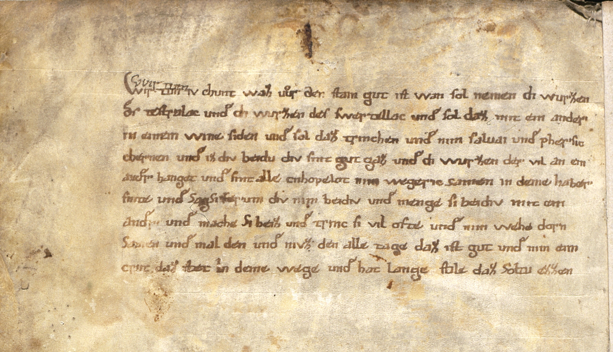

BayHStA, KL Weyarn, 1, fol. 4



Kommentar
Editor: ellen.bosnjak@textgrid.de
Archiv: BayHStA
Bestand: KL Weyarn
Signatur: 1, fol. 4
Ort:
Datum: ca. 1180 - ca. 1195
Schlagwort: Amtsbuch
Schwierigkeitsgrad: mittel
Kurzbetreff:
Medizinisches Rezept
Medizinisches Rezept
Schreiberhände:
- unbekannter Schreiber (S1)
- Zufügung von anderer Hand (S2)
Kommentar:
Auf der letzten (verso-) Seite des Codex Falkensteinensis befindet sich dieses medizinische Rezept gegen Steinleiden.
Das Rezept ist in karolingischer Minuskel geschrieben. Die Schrift weist einige Eigenhetien auf. Beispielsweise die lange Zunge des e, die auch an der häufig verwendeten de-Ligatur festzustellen ist, die zuweilen doppelt gezackte Zunge des r und das über das Mittelband hinausreichende z. Es handelt sich um einen ungeübten Schreiber; die Schrift wirkt eher unbeholfen.
Datierung von Elisabeth Noichl in ihrer Edition nach dem Schreiber F9 (Elisabeth Noichl: Codex Falkensteinensis. Die Rechtsaufzeichnungen der Grafen von Falkenstein. Beck, München 1978, QuEbayG N. F. 29, http://www.bayerische-landesbibliothek-online.de/codexfalkensteinensis)
Auf der letzten (verso-) Seite des Codex Falkensteinensis befindet sich dieses medizinische Rezept gegen Steinleiden.
Das Rezept ist in karolingischer Minuskel geschrieben. Die Schrift weist einige Eigenhetien auf. Beispielsweise die lange Zunge des e, die auch an der häufig verwendeten de-Ligatur festzustellen ist, die zuweilen doppelt gezackte Zunge des r und das über das Mittelband hinausreichende z. Es handelt sich um einen ungeübten Schreiber; die Schrift wirkt eher unbeholfen.
Datierung von Elisabeth Noichl in ihrer Edition nach dem Schreiber F9 (Elisabeth Noichl: Codex Falkensteinensis. Die Rechtsaufzeichnungen der Grafen von Falkenstein. Beck, München 1978, QuEbayG N. F. 29, http://www.bayerische-landesbibliothek-online.de/codexfalkensteinensis)
Entzifferung
(Absatz Beginn)
1 (unbekannter Schreiber:) Wir tun (Zufügung von anderer Hand:) Vvir tuen(Über der Zeile nachgetragener Text)(unbekannter Schreiber:) iv chunt waz ur den stain gut ist wan sol nemen di wurzen
2 des testralac unde di wurzen des swertellac unde sol daz mit ein ander
3 in einem wine siden unde sol daz trinchen unde nim saluai unde phersic
4 chernen unde iz div beidu div sint gut gaz unde di wurzen der vil an ein
5 ander hanget unde sint alle cnhopelot nim wegeric samen in deme haber
6 snite unde SagSi ferum div nim beidiv unde menge si beidiv mit ein
7 ander unde mache Si heiz unde trinc si vil ofte unde nim wehe dorn
8 Samen unde mal den unde nivz den alle tage daz ist gut unde nim eim
9 crut daz stet Ina) deme wege unde hat lange stile daz Soltu ezzen
(Absatz Ende)
a) der Schaft des "I"(Textzitat) ist durch einen hellen Fleck unterbrochen, eventuell ist dort die Tinte abgeschabt
Transkription
(Absatz Beginn)
1 (unbekannter Schreiber:) Wir tun (Zufügung von anderer Hand:) Vvir tuen(Über der Zeile nachgetragener Text)(unbekannter Schreiber:) iv chunt waz ur den stain gut ist wan sol nemen di wurzen
2 des testralac unde di wurzen des swertellac unde sol daz miteinander
3 in einem wine siden unde sol daz trinchen unde nim saluai unde phersic
4 chernen unde iz div beidu div sint gut gaz unde di wurzen der vil an ein
5 ander hanget unde sint alle cnhopelot nim wegeric samen in deme haber
6 snite unde Sag Si ferum div nim beidiv unde menge si beidiv mit ein
7 ander unde mache Si heiz unde trinc si vil ofte unde nim wehe dorn
8 Samen unde mal den unde nivz den alle tage daz ist gut unde nim eim
9 crut daz stet ina) deme wege unde hat lange stile, daz soltu ezzen.
(Absatz Ende)
a) der Schaft des "I"(Textzitat) ist durch einen hellen Fleck unterbrochen, eventuell ist dort die Tinte abgeschabt